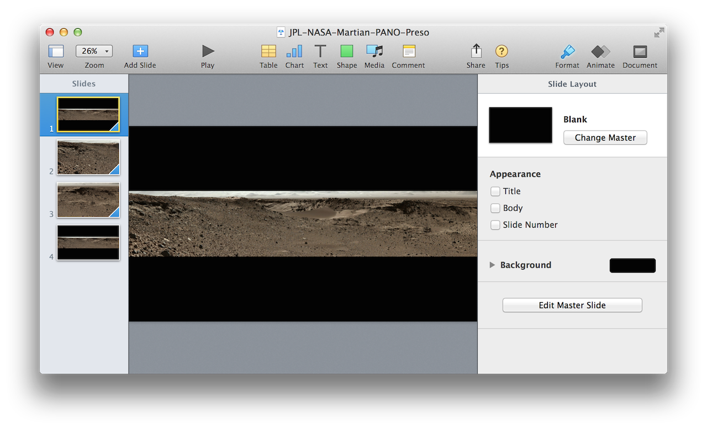

Some things are just “too big” to capture in a single image: Alaska, the Grand Canyon, the Aurora Borealis, Space, those kind of things. But that doesn’t stop us from trying to convey what it was like to “be there.” That’s why we came up with the pano (short for panoramic image), whose width mimics more of what we can see with our own eyes.
But unless you’ve got a special circular projection system, and a really large curved screen, replicating the panoramic view is very difficult. Especially in a slide presentation. But again, that doesn’t stop us from trying.
Here’s an interesting use of Keynote automation that incorporates a very wide image, like the one shown below:
NASA Jet Propulsion Laboratory, Space Images: Curiosity Mars Rover Approaches “Dingo Gap,” Mastcam View. (webpage here) (image here)
into a widescreen presentation, like this: (Click Movie to Play)
The addition of a pano image to a presentation is labor-intensive, as you need to:
Import the pano image to a new slide.
Duplicate the slide three times.
Scale the image in the second slide to fit the height of the slide and then position the image so that its left side is flush with the left side of the slide.
Scale the image in the third slide to fit the height of the slide and then position the image so that its right side is flush with the right side of the slide.
Apply the Magic Move transition to the first three slides, and adjust their transition delay value.
A very detailed process indeed, and one that’s ideal for automating.

(⬆ see above ) A widescreen presentation designed to display, zoom, and scan, a panoramic image.
DO THIS ►DOWNLOAD example image. DOWNLOAD finished presentation.
This script is designed to quickly create a presentation for a panoramic image:
Pano to Preso
01
propertytransitionInOutDuration : 3
02
propertytransitionPanDuration : 10
03
propertytransitionInOutDelay : 2
04
05
tellapplication "Keynote"
06
ifplayingistruethen tell the frontdocumenttostop
07
activate
08
09
set thesourcePanoImageto ¬
10
(choose fileof type "public.image" with prompt ¬
11
"Pick the panoramic image to place across two slides:")
Mention of third-party websites and products is for informational purposes only and constitutes neither an endorsement nor a recommendation. MACOSXAUTOMATION.COM assumes no responsibility with regard to the selection, performance or use of information or products found at third-party websites. MACOSXAUTOMATION.COM provides this only as a convenience to our users. MACOSXAUTOMATION.COM has not tested the information found on these sites and makes no representations regarding its accuracy or reliability. There are risks inherent in the use of any information or products found on the Internet, and MACOSXAUTOMATION.COM assumes no responsibility in this regard. Please understand that a third-party site is independent from MACOSXAUTOMATION.COM and that MACOSXAUTOMATION.COM has no control over the content on that website. Please contact the vendor for additional information.